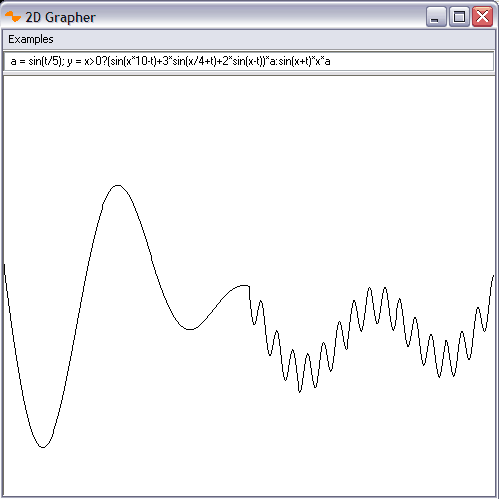

2D Grapher
By Curran Kelleher
A simple 2D cartesian grapher which supports animation, user variables, sequential statements, conditional operations, and boolean algebra.
Download Graph2D as an executable .jar (Java Archive) file. If you have Java Runtime (www.java.com) installed on your computer, this file can typically be executed directly by double clicking it.

The examples provide a tutorial of the available operations and language capabilities.
12/9/06